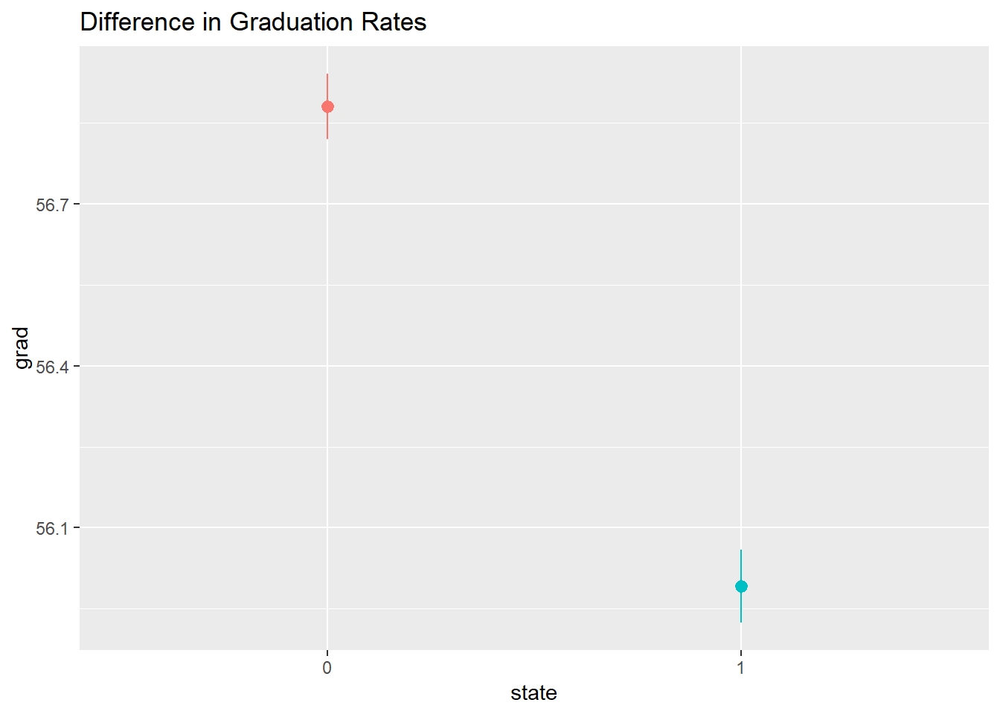
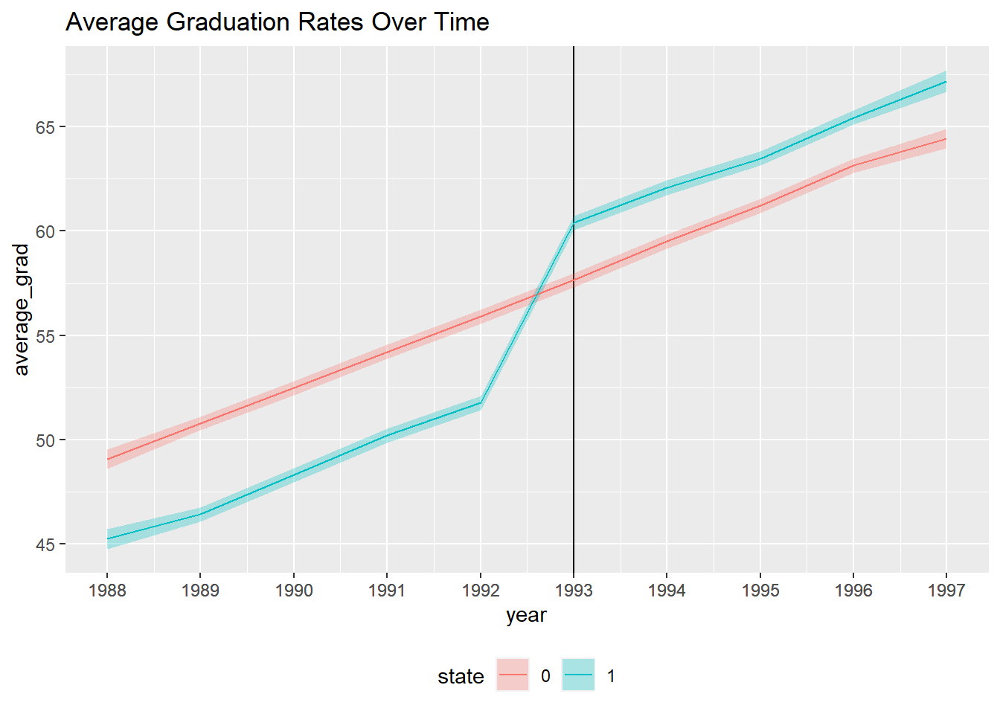

In this section I create the Synthetic data with relationships based
on intuition and research. The Synthetic Data will be used to train my
theoretic differences-in-differences (DiD) model. The data used is
pooled cross sectional at the student level between the years 1988 and
1997. Below are the three variables used in the DiD regression.
state and year are exogenous to the model, and
post is derived from year.
Variables:
Year: ranged from 1988 to 1997 to give adequate
before and after period analysis, uniform distributions
State: {0,1} binary with 1 indication Georgia or
Treatment state and 0 indication control state, uniform as well
Post: {0,1} binary and derived from year >1992 to
reflect HOPE start in 1993
grad: {0,1} where the observation is equal to 1 if
the student has acquired an undergraduate degree.
Relationships
Natural growth in educational attainment was also worked into
grad variable. As the year increases, so does the
graduation rate. Also, Georgia education attainment is lower in
comparison to most other states during this time period which was worked
into the data as well.
#packages
library(tidyverse)
library(broom)
library(patchwork)
library(scales)
library(modelsummary)
library(ggplot2)set.seed(4660)
# simulate 100000 students
n_students <- 100000
did_data <- tibble(
id = 1:n_students,
year = runif(n_students, min = 1988, max = 1997)%>%
round(0),
state = sample(c("0", "1"), n_students, replace = TRUE)
) %>%
mutate(hope = ifelse(state == "1" & year > 1992, 1, 0)) %>%
mutate(grad_base = rbeta(n_students, shape1 = 6, shape2 = 3) * 100,
state_effect = ifelse(state == "1", rnorm(n_students, mean = -5, sd = 2), 0),
year_smaller = year - 1987,
year_effect = rnorm(n_students, mean = 2, sd = 0.2) * year_smaller,
hope_effect = ifelse(state == "1" & year > 1992,
rnorm(n_students, mean = 8, sd = 3),0),
grad = grad_base + state_effect + year_effect + hope_effect,
grad = rescale(grad, to = c(0, 100))) %>%
mutate(post = ifelse(year > 1992,1,0))
head(did_data)## # A tibble: 6 × 11
## id year state hope grad_base state_effect year_smaller year_effect hope_effect grad post
## <int> <dbl> <chr> <dbl> <dbl> <dbl> <dbl> <dbl> <dbl> <dbl> <dbl>
## 1 1 1995 1 1 67.1 -3.51 8 12.7 9.96 64.1 1
## 2 2 1990 0 0 79.0 0 3 5.40 0 62.5 0
## 3 3 1994 0 0 51.3 0 7 13.8 0 46.0 1
## 4 4 1990 0 0 74.8 0 3 6.24 0 59.7 0
## 5 5 1995 1 1 75.1 -6.12 8 19.3 10.5 74.8 1
## 6 6 1994 1 1 73.1 -1.97 7 14.9 9.43 72.0 1Below shows the difference in means between the the treatment and control group, where Georgia is equal to one. From the graph, we can infer that, on average, the control state has a higher graduation rate.
ggplot(did_data, aes(x = state, y = grad, color = state)) +
stat_summary(geom = "pointrange", fun.data = "mean_se") +
guides(color = "none") +
labs(title = "Difference in Graduation Rates")
The graph below visually tests for parallel trends. From it we can infer that the control state serves as a proper counterfactual absent the HOPE scholarship intervention. After HOPE implementation, a noticeable increase in graduation rates is depicted in Georgia as well.
plot_data <- did_data %>%
group_by(year, state) %>%
summarize(average_grad = mean(grad),
se = sd(grad) / sqrt(n()),
upper = average_grad + (1.96 * se),
lower = average_grad + (-1.96 * se))
ggplot(plot_data, aes(x = year, y= average_grad, color = state)) +
geom_vline(xintercept = 1993) +
geom_ribbon(aes(ymin = lower, ymax = upper, fill = state), alpha = 0.3, color = FALSE) +
geom_line() +
theme(legend.position = "bottom") +
labs(title = "Average Graduation Rates Over Time") +
scale_x_continuous(breaks = plot_data$year)
The results from this synthetic analysis were statistically significant and estimate that the HOPE scholarship program caused graduation rates in Georgia to increase by around 7 percentage points. Also, being in Georgia is associated with a 4 percentage point decrease in graduation rates on average and being after 1993 is associated with a 8 percentage point increase in graduation rates on average. This model controls for the graduation rate’s natural growth and state differences.
model_did <- lm(grad ~ post + state + post * state , data = did_data)
modelsummary(list("DiD" = model_did),
stars = TRUE,
title = " Synthetic Regression Results",
coef_rename = c("post" = "POST","state1" = "HOPE", "post * state1" = " Post*HOPE"))| DiD | |
|---|---|
| (Intercept) | 52.864*** |
| (0.083) | |
| POST | 7.974*** |
| (0.117) | |
| HOPE | −4.145*** |
| (0.117) | |
| POST:HOPE | 6.627*** |
| (0.165) | |
| Num.Obs. | 100000 |
| R2 | 0.169 |
| R2 Adj. | 0.169 |
| AIC | 797917.2 |
| BIC | 797964.8 |
| Log.Lik. | −398953.593 |
| F | 6792.488 |
| RMSE | 13.07 |
| + p < 0.1, * p < 0.05, ** p < 0.01, *** p < 0.001 |